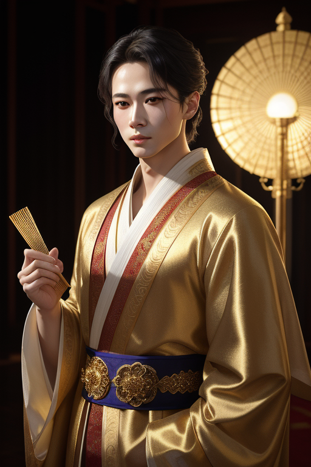

杨康
杨铁心的亲生儿子，完颜洪烈养大的金国小王爷。他生来就是南宋忠良之后，却在富贵荣华中长大。当真相揭开的那一刻，他面临了武侠世界中最残酷的选择：做回宋人杨康，还是继续做金国小王爷完颜康？他选择了后者，从此走上了一条不归路。

人物小传
| 姓名 | 杨康（金名：完颜康） |
| 别名 | 小王爷、完颜康 |
| 出身 | 临安府牛家村（今浙江杭州） |
| 生父 | 杨铁心（杨家将后人，忠义之士） |
| 生母 | 包惜弱（温柔善良，因美貌被完颜洪烈觊觎） |
| 养父 | 完颜洪烈（金国六王爷，对杨康视如己出） |
| 师父 | 丘处机（全真教）、梅超风（偷学九阴白骨爪） |
| 配偶 | 穆念慈（比武招亲相识，情深缘浅） |
| 子女 | 杨过（遗腹子，后成神雕大侠） |
| 结义兄弟 | 郭靖（未遂——杨康始终未能真正承认这段兄弟情） |
| 门派 | 全真教（名义弟子，实则未得真传） |
| 主要武功 | 九阴白骨爪、摧心掌、全真剑法、杨家枪法 |
| 最终归宿 | 铁枪庙中，身中蛇毒而死，尸体被乌鸦啄食 |
杨康是金庸武侠中最经典的"反派悲剧"——他不是一个天生的恶人，而是一个在身份认同危机中做出了利己选择的聪明人。他的悲剧不是命运的捉弄，而是每一次选择都走向深渊的累积。读懂杨康，就读懂了金庸对"善恶不由天定，而在人心"的深刻洞察。
性格分析
核心性格特质
杨康的性格可以用八个字概括：聪明过头，自私入骨。他天资极高——丘处机收他为徒时就看出他悟性远超郭靖；他风度翩翩——金国小王爷的教养让他举止优雅；他口才出众——能把黑的说成白的，让人明知他在撒谎却无法反驳。
但他的性格核心是"精致的利己主义"。他聪明，但把聪明全部用在了计算个人利益上；他重情，但情感在利益面前永远排在第二位。当真相揭开——他是宋人杨铁心之子——他面临的选择本质上是：是做一个穷苦的忠义之后，还是继续做养尊处优的金国小王爷？他选择了后者。
杨康最悲哀的地方在于：他有能力辨别善恶，却选择忽视良知。他不是不知道什么是对的，他只是在每一次抉择时，都选择了对自己更有利的那一边。
人格类型类比
如果用现代心理学框架来看，杨康最接近ESTP（企业家/说服者）人格：外向、务实、灵活、追求即时回报。他有极强的社交能力，能在各种场合游刃有余；他擅长见机行事，能在最短时间内判断局势并做出对自己最有利的决策。
但他也表现出马基雅维利主义人格特征——将他人视为达成目标的工具，缺乏道德内疚感。他对穆念慈的感情是真实的，但这不阻止他在关键时刻牺牲她；他对完颜洪烈的父子情是真实的，但这建立在"完颜洪烈能给他荣华富贵"的基础上。
性格矛盾与悲剧根源
杨康的核心矛盾是"我是谁"的身份认同危机。他从出生起就被放置在了一个错误的环境中——宋人的血脉，金人的养育。完颜洪烈对他的爱是真实的（虽然不是他的亲生父亲），但这份爱建立在一个巨大的谎言之上。杨康知道真相后的选择，反映了他价值观的底层逻辑：他认"养"不认"生"——不是出于情感，而是因为养父能给的更多。
另一个矛盾是"聪明与道德"。杨康太聪明了，聪明到可以为自己任何行为找到合理的借口。这种"道德自洽"的能力让他一步步走向深渊而不自觉——每一次小的妥协，都在为下一次大的背叛铺路。
命运轨迹
身世真相揭晓时：这是杨康人生最重要的十字路口。如果他选择认祖归宗，他可能就是另一个杨铁心——忠义刚烈。但他选择了荣华富贵，这个选择定义了他之后的一切。
铁枪庙中：杨康之死是《射雕》中最震撼的场景之一。他死在生父杨铁心埋枪的铁枪庙中，死在没有人愿意伸出援手的孤独中。金庸似乎在说：你每一次选择都在累积你的结局。
奇遇与转折
武功奇遇
全真教正宗入门：杨康的起点比郭靖高得多——丘处机是全真七子之首，天下闻名。但杨康心浮气躁，不能踏实练功，白白浪费了这个天大的机缘。这恰恰说明：最好的老师教不出不用功的学生。
九阴白骨爪——速成的诱惑：杨康偷学梅超风的九阴白骨爪和摧心掌，靠的是捷径。这两门武功阴毒狠辣、见效极快，正投合杨康急功近利的性格。但速成武功的反噬也是巨大的——九阴白骨爪需要"以毒攻毒"的法门化解反噬，杨康没有学到这一层，因此武功根基不稳。
人生转折
完颜洪烈的"爱"：完颜洪烈对杨康是真心疼爱——虽然不是亲生的，但十八年的养育之情不假。但这份爱本质上是一个"骗局"的延续。杨康接受了这份爱，就接受了这个骗局——他的人生从一开始就被放置在了道德的灰色地带。
穆念慈——未完成的救赎：穆念慈是真爱杨康的。她看穿杨康的一切劣迹，仍然想要拉他回头。如果杨康选择了穆念慈代表的"正道"，他也许还有救。但他每次都在穆念慈和自身利益之间选择了后者，最终连这份感情也被他亲手毁掉。
杨康的"奇遇"其实不少——丘处机收徒、梅超风传功、甚至郭靖曾真心想和他做兄弟。但他浪费了每一个机会，因为他只取利益不担责任。金庸用杨康和郭靖的对比告诉我们：同样的环境下，不同的选择造就不同的人生。郭靖选择了"诚"，杨康选择了"利"——这是两个人命运分岔的根源。
武功绝学
九阴白骨爪
源自《九阴真经》下册的阴毒武功，本是黄裳所创的正宗武学，但梅超风和陈玄风只练了下半部、误解了心法，练成了偏门邪功。杨康从梅超风处偷学此功，招式凌厉阴狠，五指插入敌人头颅。这套武功威力巨大，但反噬极强——如果没有正宗内功化解，长期使用会损伤自身。
九阴白骨爪的特性与杨康的性格高度一致：见效快、杀伤力强、但根基不正。这就像一个隐喻——杨康的人生，也是在追求"速成"中走向了毁灭。
全真教武功
丘处机传授的全真剑法和内功是武林正宗，讲究循序渐进、厚积薄发。杨康天资聪颖，剑法招式学得很快，但内功根基不牢——因为他没有耐心按部就班地打坐修炼。这导致他的全真武功徒有其表、缺乏内力支撑。
摧心掌与杨家枪法
摧心掌同样偷学自梅超风，掌力阴毒，专攻敌人心脏。杨家枪法是杨铁心的祖传绝学，杨康在得知身世后也略有所学，但从未认真研习——这套代表忠义的枪法，与他选择的人生道路背道而驰。
情感世界
与穆念慈：比武招亲的孽缘
杨康和穆念慈的关系是《射雕》中最令人扼腕的爱情线。穆念慈——杨铁心的义女——美丽、善良、坚贞，比武招亲时被杨康戏耍却从此痴心。她明知杨康不是好人，却一往情深；她一次次试图唤醒杨康的良知，却一次次失望。
杨康对穆念慈是爱过的——他的爱掺杂着占有欲和虚荣心，但并非全是假的。问题在于，穆念慈的爱从来没能在他的价值排序中排到第一位。当利益和穆念慈冲突时，他永远选择利益。这是最悲哀的爱情：不是不爱，而是不够爱。
与完颜洪烈：虚假但真实的父子情
完颜洪烈对杨康的父爱是杨康人生中最大的情感支撑。完颜洪烈虽然是杨家的仇人，但他对杨康十八年的养育之恩是真实的——为了杨康，他可以不顾一切。杨康选择留在完颜洪烈身边，这份"父子情"是一个重要原因。但这份情感的根源是不义的——它建立在杨铁心一家被拆散的基础上。杨康接受这份爱，就是接受了这个不义的前提。
与包惜弱：被切断的母子联結
包惜弱是杨康生命中唯一纯粹的善意来源。她在完颜洪烈的王府中十八年，住在一间复刻的牛家村茅屋里——这是她无声的反抗。杨康爱他的母亲，但他无法理解母亲为什么要坚守那间破茅屋。当包惜弱选择与杨铁心一同自尽时，杨康失去了一切道德约束。
趣事典故
名场面：比武招亲脱绣鞋
在中都的擂台上，杨康以金国小王爷之尊登台对战穆念慈。他武功远胜穆念慈，却故意戏弄——不伤她，只是轻佻地将她的绣花鞋脱下拿在手中把玩。这个场景完美展现了杨康的性格：有风度的外表下是轻浮的本质，有能力却不用在正道上。穆念慈的绣花鞋，后来成了她一生的心结。
名场面：铁枪庙的终局
在铁枪庙中——杨铁心的埋枪之地——黄蓉当着所有人的面揭穿了杨康杀害欧阳克的真相。杨康情急之下偷袭黄蓉，却一掌打在了软猬甲上。软猬甲上残留着欧阳锋的蛇毒——杨康自食其果。他在地上痛苦地翻滚，脸上满是恐怖的狞笑，无人出手相救。最后乌鸦飞到他的尸体上啄食——这个结局残忍但意味深长。
冷知识：杨康的名字有什么玄机？
"杨康"这个名字，是丘处机取自"靖康之耻"的"康"——郭靖的"靖"和杨康的"康"合在一起就是"靖康"。但吊诡的是，郭靖一生都在抵抗外族入侵（靖康之耻是金国入侵北宋），而杨康却做了金国的小王爷。名字中的期许和人生的选择形成了一个讽刺的对照。
妙语金句
"我是大金国的小王爷，不是什么宋人。"
"人生在世，不过酒色财气四字，你们这些汉人，总是把自己绑得太紧。"
"郭靖，你运气好——你有黄蓉，你有洪七公。我什么都没有。"
1983版苗侨伟塑造了最经典的杨康——英俊倜傥、亦正亦邪，被誉为"最帅杨康"，甚至抢走了不少观众对郭靖的同情。1994版罗嘉良的杨康阴鸷深沉。2003版周杰的杨康争议较大。2017版陈星旭的杨康将人物的复杂性演绎得比较到位。
现实启示
选择塑造人生
杨康最大的启示是：人不是被命运决定的，而是被选择决定的。杨康一生面临了许多次选择——每一次他都有机会回头，但他每一次都选择了利益而非道义。他的悲剧不是"我别无选择"，而是"我选择了，然后无法回头"。
在现实中，我们每天都在做大大小小的选择。杨康的故事告诉我们：小选择的累积会定义你是什么样的人。不要以为一次小小的妥协没关系——杨康就是从一个个"小妥协"开始的。
精致利己的陷阱
杨康是"精致利己主义"的完美标本：聪明、有魅力、善于权衡利弊。但精致利己的最终结局往往是"聪明反被聪明误"——当所有人都看透了你的自私，没有人会在你需要的时候伸出援手。铁枪庙中无人愿救杨康，不是因为他不够聪明，而是因为他的聪明从未用于帮助别人。
速成的诱惑与真功夫的价值
杨康在武功上追求速成——九阴白骨爪练几天就有惊人威力，全真内功练几年才见效果。他选择了前者。这映射到现实中就是：走捷径的诱惑永远存在，但捷径的代价也永远更大。郭靖的"笨办法"——日复一日苦练——反而让他走得更远。
身份认同的现代困境
杨康的身份认同困境在今天依然存在——移民二代的文化冲突、原生家庭与成长环境的矛盾、"我是谁"的终极追问。杨康选择了"背弃原生身份、融入成长环境"，这本不是错。错的是他背弃身份的同时也背弃了良知。认同自己的新身份，不需要否定旧的道德底线。
1. 不要把聪明用在"为自己找借口"上——杨康最可怕的能力是为任何行为找到合理化的理由。警惕自己的"道德自洽"。
2. 捷径的尽头往往是悬崖——追求速成没错，但如果速成需要牺牲根基，那最终你会摔得更惨。
3. 有人在等你回头——穆念慈一直在等杨康回头。现实中也许也有一个人在等你做正确的选择。不要等到无人愿等的那一天。